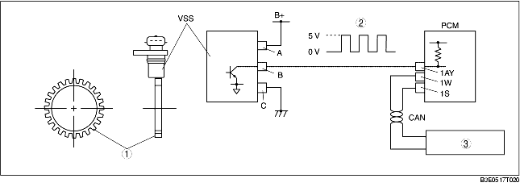

• The VSS is a Hall element type. A 24-pulse signal is generated per rotation of the sensor rotor and the VSS sends this signal to the PCM.
• The PCM performs EC-AT control based on the VSS and throttle position sensor signals.
• The PCM also outputs the vehicle speed signal to the instrument cluster.

.